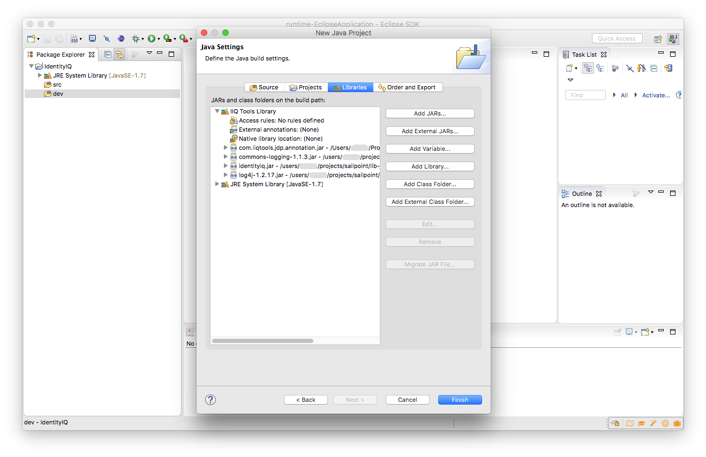
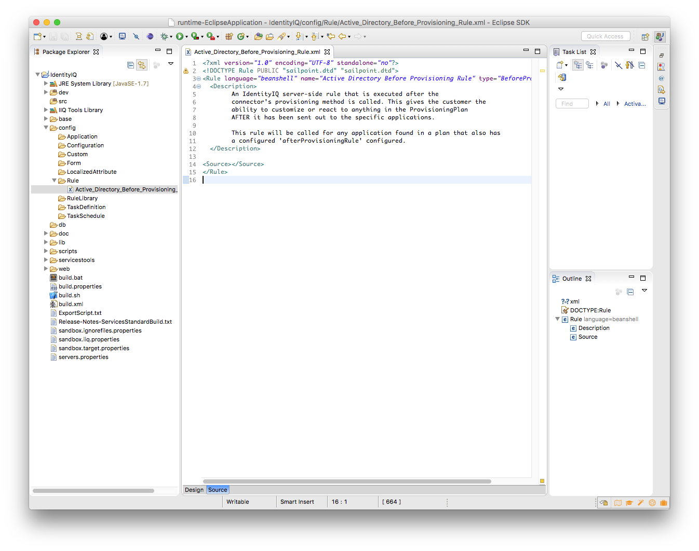

This plugin provides tools for generating BeanShell scripts from related Java classes for IdentityIQ
InstallationCreate a Java Project and configure Java Build Path


Unzip SSB files on the project folder and setup IdentityIQ libraries

Create new source folder 'dev'
Create a new Java Class
@IIQArtefact - mandatory annotation.
@IIQArtefactBody - the main method that body is extracted and copied into target XML node. All other methods are copied as is.
@IIQArtefactIgnore - fields and methods marked with this annotation will be excluded from result script.

Create a new IdentityIQ Rule

Click the IIQ Artefact button on the main toolbar while the Java class is selected
Review changes made in the xml file